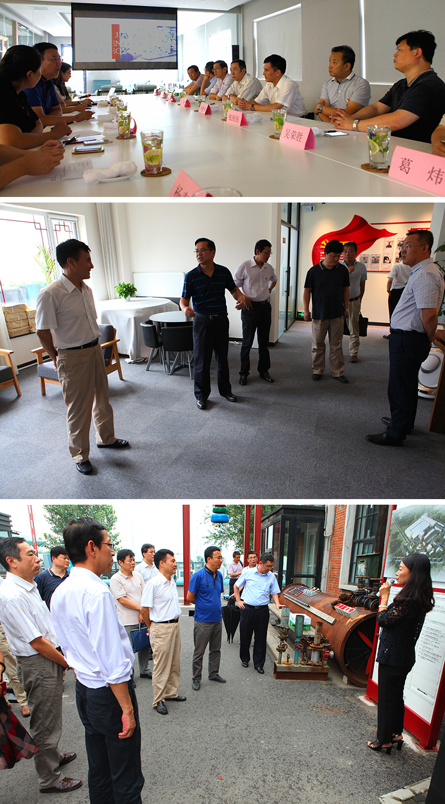

首页
首页
同舟共济扬帆起 乘风破浪万里航
日期：2017-08-22
——国合中心开展合作考察全面推进新项目发展
为深入贯彻党员大会精神，全面推进新项目发展，8月22日下午，党委书记齐建华率领导班子成员先后前往拟开展合作的博研正通（北京）信息咨询有限公司（以下简称“博研”）以及北京阳光嘉诚投资有限公司（以下简称“嘉诚”）进行实地考察，并就项目合作事宜进行了洽谈磋商。
齐建华一行首先抵达博研，听取了该公司董事长宗延龙和总经理程立群关于博研发展历程的介绍和关于拟开展教育培训合作项目的专题汇报。齐建华对博研的发展成绩给予充分肯定，同时指出：“国合中心在教育培训领域经历了30年的发展，各方面具备较为扎实的基础，希望通过加强合作，实现优势互补，使国有企业的品牌优势与私营企业的市场化机制有机结合，共同为北京市教育培训事业做出更大贡献。”
随后，齐建华一行在参观考察了由嘉诚投资运营的半壁店1号文化产业园后抵达嘉诚总部，听取了创新发展情况和双方拟合作项目情况的汇报。齐建华对嘉诚的经营理念和发展成绩给予充分肯定，明确表达了与嘉诚在文化产业领域开展合作的意向，同时，就有关项目推进、落实落地事宜提出了具体要求。
本次合作项目实地考察，是国合中心新一届领导班子在引领企业创新发展征程中的良好开局，对于国合中心蓄势借力、开放共享，促进改革发展与转型升级具有重要的意义。
